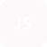

- Java8+
-  JUnit
- IDE Spring Boot
- IDE Visual Studio Code
- JavaScript
- TypeScript
 HTML5
HTML5- CSS
 Bootstrap
Bootstrap
- Angular
 MYSQL
MYSQL
- Aurora RDS
- IDE AWS Cloud 9
- python
 Git
Git - GitHub
- Figma
Seja bem vindo(a) ao meu Portifólio!
Olá, sou Luiz Fabio.
É um prazer ter a oportunidade de me apresentar para você!
Sou de São Paulo, Zona Sul, Capital.
Possuo um perfil comunicativo, autônomo e proativo. Essas
qualidades, ou como chamamos, Soft Skills, me fizeram um excelente colaborador, capaz de lidar e se
adaptar as adversidades, para ocupar cargos como: Recreador, garçom, vendedor e atendente.
Foram
mais de
10 anos dedicados em atendimento direto ao cliente, porém esse que vos fala, sempre quis alçar novos
voos, novos desafios, sair da zona de conforto.
Generation
Durante a pandemia eu ouvi falar sobre a Generation e seus bootcamps, pesquisei mais sobre e, foi aí
que
eu percebi que minha recolocação no mercado de trabalho estava mais perto do que eu imaginava.
Redes
sociais, jogos digitais, apps, tudo que antes eu usufruía como cliente, agora eu poderia fazer parte
do
desenvolvimento ou melhorias. Me tornei aluno generation, fiz parte da turma 53 em 2022. o bootcamp
foi
dividido em três blocos.
- 1ºBloco - Backend: tivemos, introdução à lógica de programação no Portugol, para facilitar a compreensão dos conceitos básicos de programação. Depois aplicamos a lógica na linguagem Java no Eclipse IDE, também aprendemos sobre Git e Github.
- 2ºBloco - Tivemos introdução a lógica de banco de dados relacionais, utilizando o MYSQL como base de estudos para os exercícios propostos no Bootcamp.
-
3º E último Bloco - Frontend: tivemos aula sobre; lógica de HTML5, CSS3, e o
Framework Bootstrap. Tudo sendo desenvolvido na IDE Visual Studio Code.
Foi proposto pela generation que para finalizar o bootcamp, a turma 53 seria dividida em grupos com base na ODS #2 da ONU "fome zero e agricultura sustentável", para criar um projeto integrador, sendo um blog ou um E-commerce. O grupo ao qual participei decidiu que criaríamos um E-commerce. O nome é “Eco-commerce”, focado em produtos sustentáveis, onde uma parte dos lucros seria revertida em doações para ongs de desenvolvimento sustentável, afim de ajudar famílias de baixa renda.
Campinho Digital
Enquanto eu ainda era um aluno Generation, tive muitas palestras e workshops e programação em nuvem
era
um tema recorrente. Eu ouvia muito falar sobre a AWS e como eal vinha revolucionando o mercado de
TI.
Acabei ficando muito interessado sobre o tema, e pesquisando mais sobre, descobri que o Bootcamp da
Campinho Digital em parceria com a AWS, estava com inscrições abertas. Me inscrevi e nesse Bootcamp
me
formei como AWS Practitioner. Tendo conhecimento sobre os sistemas da AWS e como eles podem ser
utilizados para atender às necessidades de negócios. Como também fincuionas os métodos de
implementação.
Todas as aulas foram ministradas em um ambiente desenvolvido pela própria AWS, que simula o ambiente
real da AWS.
Tivemos aulas de:
- Introdução ao Cloud Foundations.
- Aulas de Linux.
- Redes.
- Introdução à linguagem Python na IDE Cloud9.
- Banco de dados Aurora RDS.
- Segurança de dados.
- E uma imersão a todos os serviços que a AWS tem a oferecer.
Faculdade Descomplica
Em janeiro deste ano, deu um dos passos mais que eu considero até então o mais importante na minha
carreira, iniciei minha graduação no curso de Bacharelado em Ciências da Computação na Faculdade
Descomplica.
E aqui neste espaço, você encontrará todos os projetos que criei, colaborei ou que ainda estão
sendo finalizados.
Obrigada pela visita, espero que você goste!
Ou asssista ao
Habilidades
- Trabalho em equipe
- Orientação ao detalhe
- Criatividade
- Proatividade
- Comunicação
- Liderança
- Métodologia Ágil
- Métodologia SCRUM
- Empatia
- Resiliência
- Português (BR)
- Inglês (B1 Intermendiate)
- Espanhol (básico)
Projetos Generation
Desenvolvidos durante o bootcamp da Generation Brasil
Introdução à lógica de Programação.
Primeiros passos em Portugol para facilitar a compreensão dos conceitos básicos de
programação.
Depois aplicamos a lógica na sintaxe de linguagem Java na IDE Eclipse.
Portugol.Java
Primeiro desafio em grupo do Bootcamp Generation.
Criar um chatboot com os
fundamentos Java aprendidos em aula, Confira:
Projeto.Java
Banco de Dados MYSQL
Aprendendo sobre o Banco de Dados relacional MYSQL.
Desenvolvendo exercícios prospostos em aula através dos conhecimentos
adquiridos
MYSQL
Site em HTML5 e CSS3
Criar um site utilizando apenas,
HTML5 e CSS3 com os fundamentos aprendidos em aula, link do site Page: Confira o
FundamentosWeb
Segundo desafio do 3ºBloco do Bootcamp criar uma Landing Page.
Criar uma Landing Page
utilizando, HTML5 e CSS3 agora com apoio do framework Bootstrap e seus utilitários
link da
Landing Page: Confira o
Orgulho da
Sigla
Projeto integrador, desenvolvido ao decorrer do Bootcamp da Generation Brasil.
Projeto desenvolvido com base na ODS#2 da ONU "fome zero e agricultura
sustentável. Saiba mais em:
Eco-mmerceou veja o vídeo
apresentação em:
Linkedin
Projetos AWS Cloud
Desenvolvidos durante o bootcamp da Capinho Digital
Primeiro Lab AWS.
Subir uma EC2(Amazon Elastic Compute Cloud)
AWS-EC2
Segundo Lab AWS.
Subir uma EC2(Amazon Elastic Compute Cloud) com um página HTML puro
HTML-EC2
Aulas de Python ministradas durante o Bootcamp da Campinho Digital.
Foram ao todo seis aulas
abordando a sintaxe de Python e colocando a teoria em prática.
Python-CD
Projetos
Desenvolvidos durante meus estudos entre faculdade e DIO e outros
Projeto Dio em parceria com Santander Open Academy.
Quatro dias imersivos para construir, junto com
experts, uma API Rest para criação de extrato bancário do Banco Santander na prática
e
do
zero.
Dio Santander
Primeiro Trimestre.
°Arquitetura de Computadores do Século XXI
°Criação de Aplicações e Sistemas
°Desenvolvimento FrontEnd.
Módulo1A
Proposto em aula, criar uma landpage usando apenas HTML5, CSS3 e o Framework Bootstrap.
Para saber mais sobre o exercício proposto, acesse o link
Miojoclan
Projeto criado utilizando.
Backend: Spring, framework Java.
Frontend: IDE Visual Studio Code, e o pacote npm do NodeJs que permite a criação da aplicação Angular.
CRUD
Exercícios Java.
Para ter acesso aos exercícios desenvolvidos em aula durante o Bootcamp, acesse:
Bootcamp DIO
Proposta do Projeto:
Criação de um diagrama UML
Implementar as classes e interfaces correspondentes em Java
iPhone 2007
Contribuindo em um Projeto Open Source no GitHub
Open Source
Criando um projeto explorando os pilares POO de java
Projeto criado em aula durante o Bootcamp Santander em parceria com a DIOOpen Source